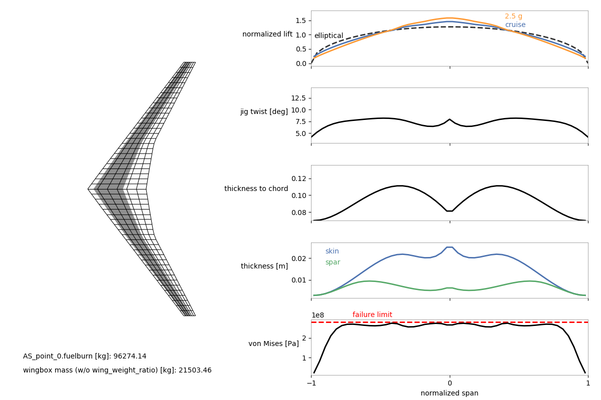

Aerostructural wing optimization using OpenAeroStruct
Contents
Aerostructural wing optimization using OpenAeroStruct#
Introduction#
This example demonstrates the aerostructural optimization of the Common Research Model (CRM) wing using OpenAeroStruct. The aerostructural design problem is formulated as an optimization problem, with the goal of minimizing fuel burn while satisfying structural and aerodynamic performance constraints.
The problem involves coupling of two disciplines: aerodynamics and structures. The aerostructural optimization is performed using an AerostructPoint group, which contains the additional components needed for aerostructural optimization.
The structural part of the CRM wing is modeled as a wingbox made of aluminum. The aerodynamic wing surface is represented using a vortex lattice method (VLM).
The optimization problem formulation is set up using the OpenMDAO framework, with the ScipyOptimizeDriver as the optimizer. The design variables, constraints, and objective function are added to the problem, and the problem is set up and solved using the prob.setup() and prob.run_driver() methods, respectively.
Overall, this example highlights the capabilities of OpenAeroStruct for aerostructural optimization, and demonstrates the use of aerostructural optimization in designing aircraft wings for improved fuel efficiency and performance.
This example heavily draws from this page in the OpenAeroStruct docs; the figure below shows a visualization of the optimized aerostructural wing.

Tools used and installation procedure#
OpenAeroStruct is a lightweight tool that performs aerostructural optimization using OpenMDAO. It couples a vortex-lattice method (VLM) and a 6 degrees of freedom 3-dimensional spatial beam model to simulate aerodynamic and structural analyses using lifting surfaces. These simulations are wrapped with an optimizer using NASA’s OpenMDAO framework. This journal paper goes into much more detail about the theory behind OpenAerostruct, and its accompanying documentation is also helpful.
OpenAerostruct is pip installable via pip install openaerostruct and all the pre-requisites for OAS will be installed along with that command.
Optimization problem formulation#
18 design variables and 5 constraints
%load -r 1-20 oas_example.py